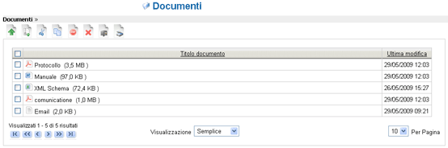

Gestione Documenti |
Cliccate su Documenti, quarta voce del menù di sistema. La parte centrale
ora viene occupata dall'elenco dei documenti, questi ultimi sono organizzati in
cartelle e sotto-cartelle in modo simile a quanto avviene in un normale disco
per PC.
La navigazione all'interno delle cartelle avviene semplicemente cliccando sul
nome della cartella nell'elenco delle cartelle posto sulla sinistra. L'utente può a questo punto scorrere l'elenco dei documenti contenuti all'interno della cartelle selezionata in 4 possibili visualizzazioni:
- 1) Semplice: per ogni documento vengono visualizzati solo il titolo e la data di ultima modifica.
- 2) Dettagli: per ogni documento vengono visualizzati il protocollo, il titolo, la data di ultima modifica, l'autore e la dimensione.
- 3) Icone medie: per ogni documento viene visualizzata una sua immagine di media grandezza.
- 4) Icone grandi: per ogni documento viene visualizzata una sua immagine in grande dimensione.

Figura 3: Documenti e cartelle
(semplice)
Figura 4: Documenti e cartelle (dettagli)
Figura 5: Documenti e cartelle (icone medie)
Per quanto riguarda il nome della cartella, inserite “prova” e premete sul pulsante Salva, un messaggio vi avviserà che la nuova cartella è stata creata.
Figura 6: Creazione di una cartella
Ora dovreste vedere la presenza della nuova cartella. Cliccate sul suo nome
così da entrare nella cartella medesima ora vuota e notate che nella parte
superiore dell'area principale viene sempre mantenuta traccia del percorso
all'interno della struttura a cartelle.
A questo punto andate ad inserire un nuovo documento; per farlo posizionate
il cursore al di sopra dell'elenco dei documenti e cliccate sull'icona 2.1.
Inizialmente viene richiesto di specificare il file da caricare e la lingua con cui è stato scritto il documento.
Per specificare il file basta premere sul tasto Sfoglia..., selezionare un file sul
proprio PC e poi premere il pulsante Upload. Una progress-bar vi indicherà lo
stato della procedura di caricamento.
La specifica della lingua avviene mediante l'opportuna tendina ed è
importante poiché incide sul motore di indicizzazione del contenuto testuale
del documento. Inoltre sono presenti due checkbox: la prima per richiedere a
LogicalDOC di estrarre subito i tag(ovvero le parole chiave) del documento; la
seconda per richiedere l'immediata indicizzazione del documento. Per questa prova, selezionate la casella dell'indicizzazione immediata.
Dopo che il documento è stato caricato, potete passare alla fase successiva
selezionando il pulsante 'Successivo >>'. Alcune informazioni vengono
estratte, e viene visualizzata la maschera di modifica del documento per una
verifica finale. In questa fase è possibile modificare i vari parametri descrittivi
del documento, ma solo se l'utente ha i relativi permessi di modifica. La
pagina è suddivisa in 3 schede:
- 1) Generale: sono presenti tutte le informazioni generali sul documento e il parametro maggiormente importante è costituito dalla specifica delle etichette, poiché queste potranno essere usate in seguito per le ricerche. Ogni etichetta (parola chiave), infatti, consente di catalogare un documento.
- 2) Fonte: consente di visualizzare diversi campi, tra i quali l'autore, la fonte, l'oggetto e il destinatario.
- 3) Classe documentale: visualizzare la classe documentale a cui è associato il documento e i relativi attributi.

Figura 7: Maschera di modifica di un documento
Cliccando su Salva il documento verrà definitivamente memorizzato nel
sistema. Immediatamente dopo la creazione tornerete alla cartella di prova
precedentemente creata e potrete notare che ora contiene il documento
appena inserito. Cliccate sul documento per scaricarlo.
LogicalDOC evita che all'interno di una stessa cartella vi siano due documenti
con lo stesso nome; ad esempio, se l'utente tenta di inserire nella cartella “prova” un documento di nome “doc”, ma in tale cartella esiste già un
documento con lo stesso nome, il nuovo documento verrà automaticamente
denominato “doc(1)”.
Figura 8: Apertura di un menù contestuale
Cliccando col tasto destro sul nome del documento, compare il menu
contestuale. Il menù contestuale consente l'accesso alle principali funzioni di
gestione del singolo documento quali ad esempio il checkout o la modifica.
| Occorre prestare sempre molta attenzione alla cancellazione di documenti e cartelle giacché l'eliminazione non è un processo reversibile e i dati verranno persi per sempre. Solo nella edizione Enterprise è possibile ripristinare documenti cancellati. | |